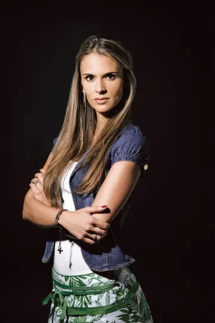
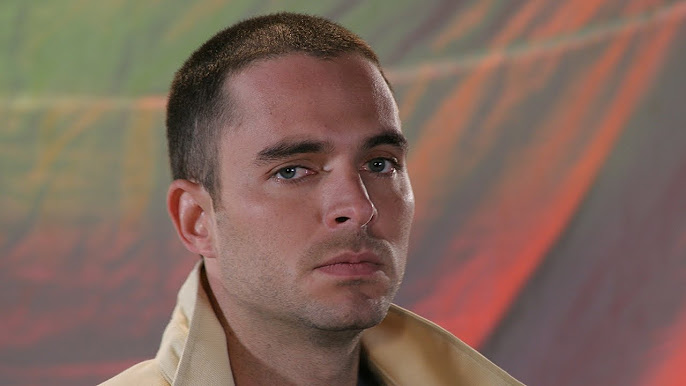

Personajes
Personajes Principales
Martin Gonzalez (Fresita)

Protagonista y narrador. Inicia desde abajo y escala rápido en el cartel; decide delatar a sus socios para salvar su vida y su amor con Sofia.
Su Actor Es: Manolo Cardona
Milton Gimenez (El Cabo)

Uno de los capos más sanguinarios, sanguinario y ambicioso. Inspirado en Wilber Varela "Jabón".
Su Actor Es: Robinson Diaz
Sofi De Gonzalez (Sofia)

El amor de la vida de Martín. Una modelo colombiana que intenta mantenerse alejada del negocio, pero termina envuelta por su relación.
Su Actor Es: Karen Martinez
Pepe Cadena (Pepe)

El mejor amigo de Martín. Impulsivo, leal y metido de lleno en el tráfico hacia EE. UU., termina encarcelado y colaborando también.
Su Actor Es: Diego Cadavid
Álvaro José Pérez (Guadaña)

Sicario de confianza de "El Cabo". Personaje oscuro pero con toques de humor negro, leal a su jefe hasta las últimas consecuencias.
Su Actor Es: Julián Arango
Braulio Bermúdez (El Patron)
.jfif)
Basado en Ivan Urdinola. Capo poderoso, extravagante y uno de los fundadores del cartel.
Su Actor Es: Fernando Solornazo